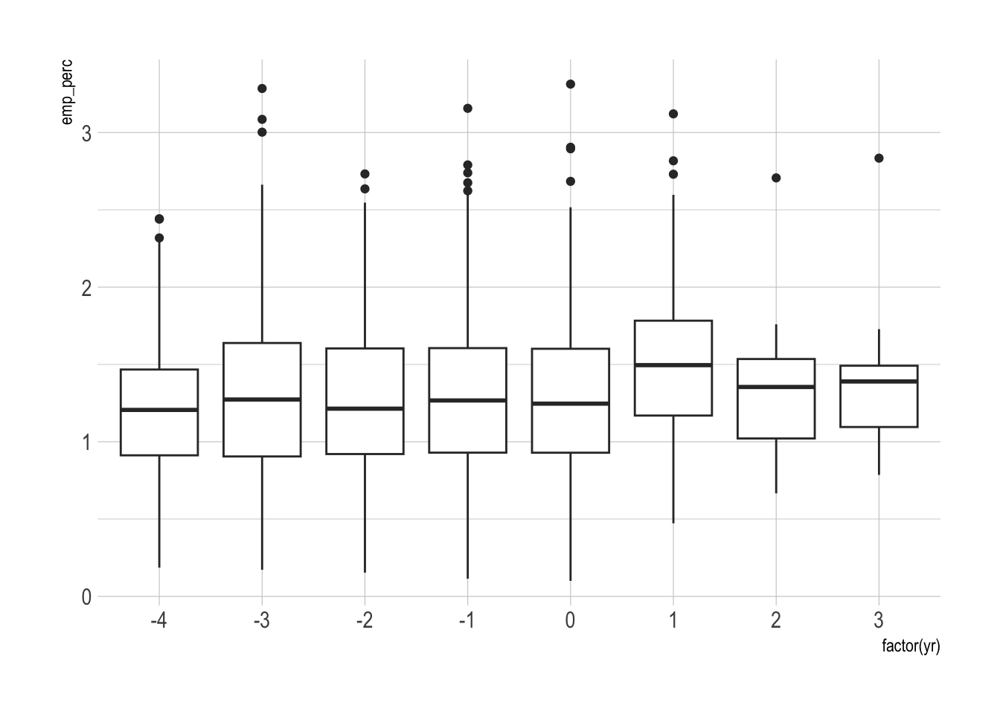
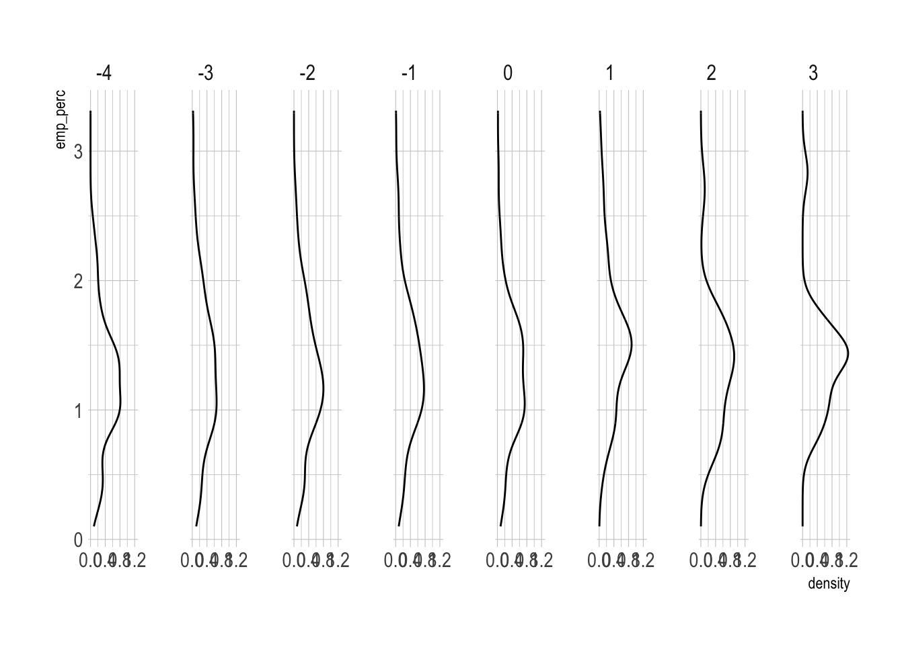
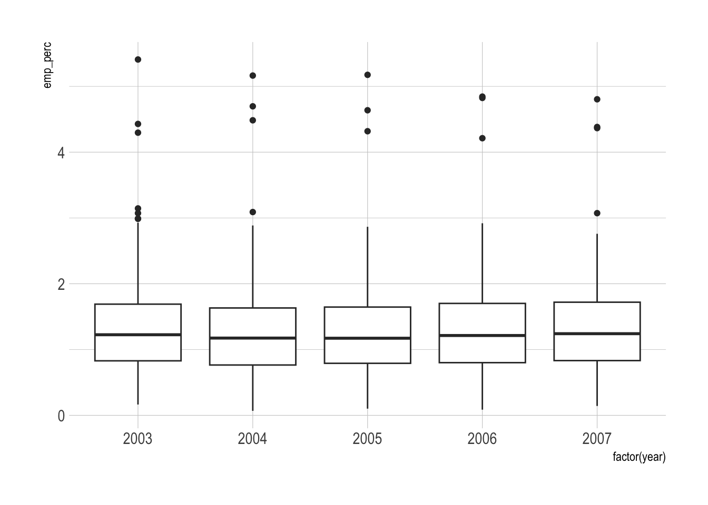
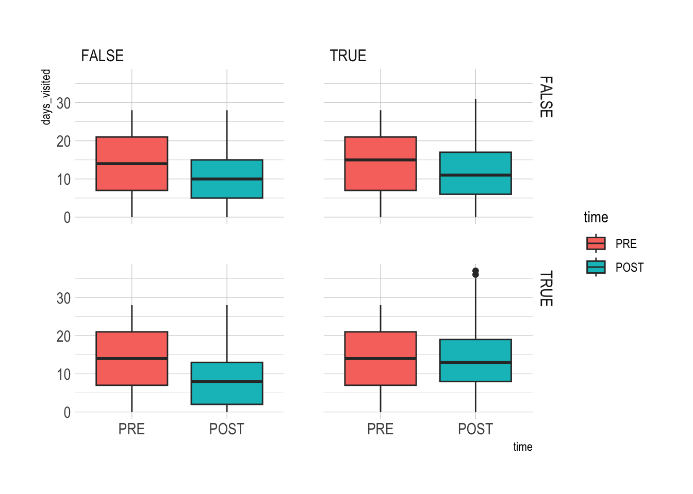
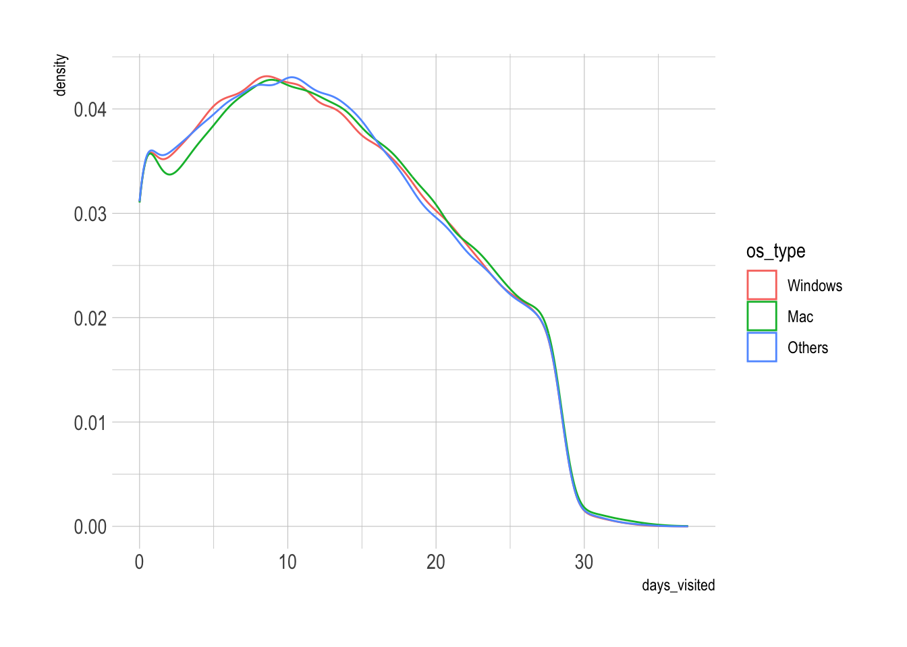
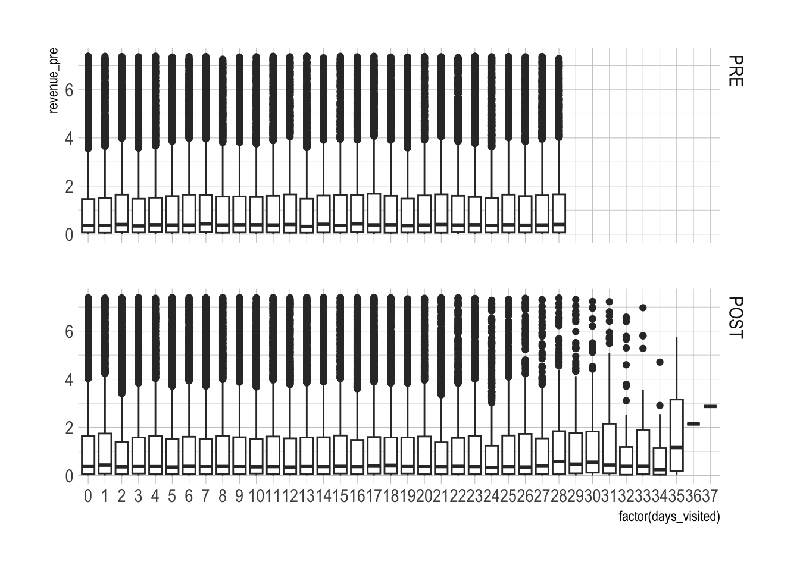
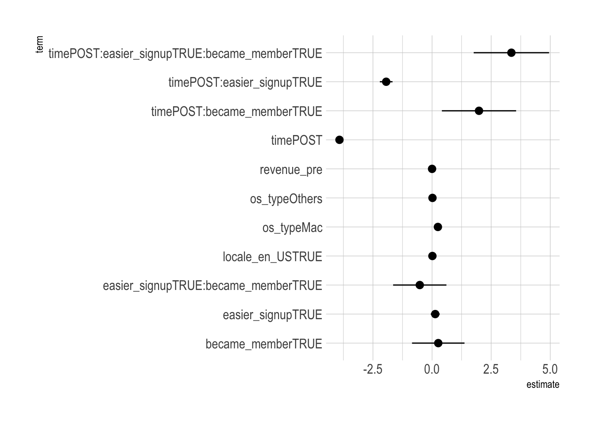
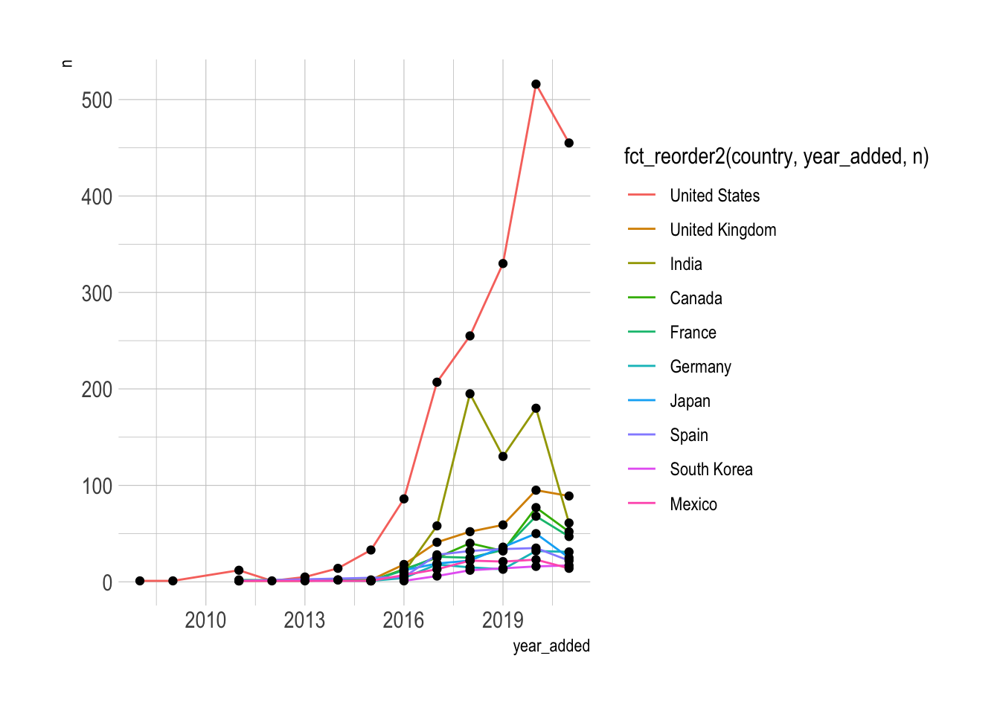

library(tidyverse)
library(skimr)
library(lubridate)
library(stargazer)
library(broom)Fall 2022 DANL 200 Final Exam 3
Load R packages
Question 1
The following is the data.frame for Question 1.
teen_emp <- read_csv("https://bcdanl.github.io/data/teen_emp.csv")- The data.frame, teen_emp, contains teen employment in 500 counties in the U.S. from 2004 to 2007.
Variable description
year: year of the observationid_county: a unique identifier (FIPS) for a particular countypop: population for a countyemp: teen workers in a county at the end of that yearyr_raise: a year that a state where a county is located raised its minimum wage at the beginning of the year,NAfor a county if a minimum wage is equal to the federal minimum wage over the entire period.
Q1a.
Download the ZIP file that contains the CSV file,
county_population_2004_2007.csv.The CSV file,
county_population_2004_2007.csv, has the following three variables:year: yearfips: a unique identifier (FIPS) for a US countypop: population
Read the CSV file,
county_population_2004_2007.csv, as data.frame with the name,df_pop, using its absolute pathname andread_csv().
Show the code
df_pop <- read_csv("/Users/byeong-hakchoe/Google Drive/suny-geneseo/teaching-materials/lecture-data/county_population_2004_2007.csv")Q1b.
Remove the variable
popfrom the data.frameteen_emp.Then add the variable
popin the data.frame,df_pop, to the data.frame,teen_emp, by joiningteen_empanddf_pop.The resulting data.frame must contain
- all the observations in
teen_emp, while not having any missing values in variable,emp; and
- all the observations in
- only the following variables with the following order:
id_county,year,pop,emp, andyr_raise.
- only the following variables with the following order:
Show the code
teen_emp <- teen_emp %>%
select(-pop)
teen_emp <- teen_emp %>%
left_join(df_pop, by = c("id_county" = "fips", "year"))
teen_emp <- teen_emp %>%
select(`id_county`, `year`, `pop`, `emp`, `yr_raise`)Q1c.
Add the variables, name and state, in the data.frame, county_name, to the data.frame, teen_emp, by joining the two data.frames, teen_emp and county_name.
county_name <- read_csv(
"https://bcdanl.github.io/data/county_name.csv"
)- Variables in
county_nameid: a unique identifier (FIPS) for a US countyname: County Namestate: County Name
- The resulting data.frame must contain
- all the observations in
teen_emp, while not having any missing values in variable,emp; and
- all the observations in
- only the following variables with the following order:
id_county,name,state,year,pop,emp, andyr_raise.
- only the following variables with the following order:
Show the code
teen_emp <- teen_emp %>%
left_join(county_name, by = c("id_county" = "id")) %>%
select(`id_county`, `name`, `state`, `year`, `pop`, `emp`, `yr_raise`)Q1d.
- Add the following two variables—
emp_perc, the percentage of people that are teen workers in a county
raise,TRUEif there was a raise in minimum wage in a county during the period of time;FALSEotherwise —to the data.frame,teen_emp.
Show the code
q1d <- teen_emp %>%
mutate(emp_perc = 100 * emp / pop,
raise = ifelse(!is.na(yr_raise), T, F))Q1e.
Report mean, median, minimum, maximum, standard deviation of variable, emp_perc, for each state.
Show the code
q1e <- q1d %>%
group_by(state) %>%
skim(emp_perc)Q1f.
In the resulting data.frame from Q1d, or teen_emp, remove observations for which values of yr_raise is missing.
Show the code
q1f <- filter( q1d, !is.na(yr_raise) )Q1g.
Provide both (1) ggplot and (2) a simple comment to describe the yearly trend of the distribution of emp_perc before and after yr_raise.
Show the code
q1g <- q1f %>%
mutate(yr = year - yr_raise)
ggplot(q1g) +
geom_boxplot(aes(x = factor(yr), y = emp_perc))
Show the code
ggplot(q1g) +
geom_density(aes(y = emp_perc)) +
facet_grid(.~ factor(yr))
Q1h.
Provide both (1) ggplot and (2) a simple comment to describe the yearly trend of the distribution of emp_perc for counties that did not raise their minimum wages during the time period.
Show the code
q1h <- filter(q1d,
raise == F)
ggplot(q1h) +
geom_boxplot(aes(x = factor(year), y = emp_perc))
Question 2
The following is the description for Question 2:
TripAdvisor is an online travel research company that empowers people around the world to plan and enjoy the ideal trip.
TripAdvisor wanted to know whether promoting membership on their platform could drive engagement and bookings.
To do so, TripAdvisor had just run an experiment to explore user retention by offering a random subset of customers an easier sign-up process for membership.
The following is the data.frame for Question 2:
tripadvisor <- read_csv("https://bcdanl.github.io/data/tripadvisor_cleaned.csv")Variable description
id: a unique identifier for a user.time:PREiftimeis before the experiment;POSTiftimeis in the 28 days after the experiment.
days_visited: Number of days a user visited the TripAdvisor website.easier_signup:TRUEif a user was exposed to the easier signup process (e.g., one-click signup) during the experiment; FALSE otherwise.became_member:TRUEif a user became a member during the experiment period;FALSEotherwise.locale_en_US:TRUEif a user accessed the website from the US;FALSEotherwise.os_type: Windows, Mac, or Othersrevenue_pre: Amount of dollars a user spent on the website before the experimentIn the data.frame,
tripadvisor, for eachidvalue, there are two types of observations—one withtime == "PRE"and the other withtime == "POST".
Q2a.
Using the given data.frame, tripadvisor, create the data.frame, tripadvisor, for which - (1) time is a factor-type variable of time with a reference level, "PRE". - (2) os_type is a factor-type variable of os_type with a reference level, "Windows".
Show the code
q2a <- tripadvisor %>%
mutate(time = factor(time, levels = c("PRE", "POST")),
os_type = factor(os_type, levels = c("Windows", "Mac", "Others") ) )Q2b.
Provide both (1) ggplot and (2) a simple comment to describe how the relationship between time and days_visited varies by easier_signup and became_member.
Show the code
ggplot(q2a) +
geom_boxplot(aes(y = days_visited,
x = time,
fill = time) ) +
facet_grid(easier_signup ~ became_member)
Comments are not provided here.
Q2c.
Provide both (1) ggplot and (2) a simple comment to describe the distribution of days_visited varies by os_type.
Show the code
ggplot(q2a) +
geom_density(aes(x = days_visited,
color = os_type) ) 
Comments are not provided here.
Q2d.
Provide both (1) ggplot and (2) a simple comment to describe how the relationship between revenue_pre and days_visited varies by time conditioning that revenue_pre is less than or equal to its third quartile level.
Show the code
skim(q2a$revenue_pre) # to see the third quartile level| Name | q2a$revenue_pre |
| Number of rows | 183296 |
| Number of columns | 1 |
| _______________________ | |
| Column type frequency: | |
| numeric | 1 |
| ________________________ | |
| Group variables | None |
Variable type: numeric
| skim_variable | n_missing | complete_rate | mean | sd | p0 | p25 | p50 | p75 | p100 | hist |
|---|---|---|---|---|---|---|---|---|---|---|
| data | 0 | 1 | 92 | 2582.7 | 0 | 0.13 | 0.99 | 7.39 | 528631.4 | ▇▁▁▁▁ |
Show the code
ggplot(data = filter(q2a, revenue_pre <=7.39),
aes(y = revenue_pre,
x = factor(days_visited))) +
geom_boxplot() +
facet_grid(time ~.)
Q2e.
- Randomly split the data.frame,
tripadvisor, into training and testing data.frames. - Approximately 70% of observations in the data.frame, tripadvisor, must go to the training data.frame.
- The rest observations in the the data.frame, tripadvisor, must go to the testing data.frame.
-Additionally, - (1) the number of observations for each id must be 2 in both training and testing data.frames. - (2) the distribution of easier_signup and the distribution of became_member are approximately the same between training and testing data.frames.
Show the code
df_1 <- filter(q2a, easier_signup == 0 & became_member == 0, time == "PRE")
df_2 <- filter(q2a, easier_signup == 0 & became_member == 1, time == "PRE")
df_3 <- filter(q2a, easier_signup == 1 & became_member == 0, time == "PRE")
df_4 <- filter(q2a, easier_signup == 1 & became_member == 1, time == "PRE")
df_1p <- filter(q2a, easier_signup == 0 & became_member == 0, time == "POST")
df_2p <- filter(q2a, easier_signup == 0 & became_member == 1, time == "POST")
df_3p <- filter(q2a, easier_signup == 1 & became_member == 0, time == "POST")
df_4p <- filter(q2a, easier_signup == 1 & became_member == 1, time == "POST")
gp_1 <- nrow( filter(q2a, easier_signup == 0 & became_member == 0, time == "PRE") )
gp_2 <- nrow( filter(q2a, easier_signup == 0 & became_member == 1, time == "PRE") )
gp_3 <- nrow( filter(q2a, easier_signup == 1 & became_member == 0, time == "PRE") )
gp_4 <- nrow( filter(q2a, easier_signup == 1 & became_member == 1, time == "PRE") )
gp_1 <- runif( gp_1 )
gp_2 <- runif( gp_2 )
gp_3 <- runif( gp_3 )
gp_4 <- runif( gp_4 )
train_1 <- filter(df_1, gp_1 >= .3)
test_1 <- filter(df_1, gp_1 < .3)
train_2 <- filter(df_2, gp_2 >= .3)
test_2 <- filter(df_2, gp_2 < .3)
train_3 <- filter(df_3, gp_3 >= .3)
test_3 <- filter(df_3, gp_3 < .3)
train_4 <- filter(df_4, gp_4 >= .3)
test_4 <- filter(df_4, gp_4 < .3)
train_1p <- filter(df_1p, gp_1 >= .3)
test_1p <- filter(df_1p, gp_1 < .3)
train_2p <- filter(df_2p, gp_2 >= .3)
test_2p <- filter(df_2p, gp_2 < .3)
train_3p <- filter(df_3p, gp_3 >= .3)
test_3p <- filter(df_3p, gp_3 < .3)
train_4p <- filter(df_4p, gp_4 >= .3)
test_4p <- filter(df_4p, gp_4 < .3)
dtrain <- rbind(train_1, train_2, train_3, train_4,
train_1p, train_2p, train_3p, train_4p)
dtest <- rbind(test_1, test_2, test_3, test_4,
test_1p, test_2p, test_3p, test_4p)
dtrain <- dtrain %>%
arrange(id, time)
dtest <- dtest %>%
arrange(id, time)
# prop.table(table(dtrain$became_member))
# prop.table(table(dtest$became_member))
# prop.table(table(dtrain$easier_signup))
# prop.table(table(dtest$easier_signup))Q2f.
Consider the following formulas for linear regression:
formula_1 <- days_visited ~ time * easier_signup +
os_type + locale_en_US + revenue_pre
formula_2 <- days_visited ~ time * easier_signup * became_member +
os_type + locale_en_US + revenue_preTrain the linear regression model with the above formula.
If you could not properly split the data.frame into the training and testing data.frames in Q2e, use the data.frame, pension_tax, as the training data.frame.
Report the summary of the linear regression result.
Show the code
model_1 <- lm(data = dtrain,
formula_1)
model_2 <- lm(data = dtrain,
formula_2)Show the code
stargazer::stargazer(model_1, model_2,
type = 'text')| Dependent variable: | ||
| days_visited | ||
| (1) | (2) | |
| timePOST | -3.905*** | -3.917*** |
| (0.061) | (0.061) | |
| easier_signup | -0.059 | 0.134 |
| (0.061) | (0.095) | |
| became_member | 0.262 | |
| (0.555) | ||
| os_typeMac | 0.257*** | 0.247*** |
| (0.053) | (0.052) | |
| os_typeOthers | 0.027 | 0.018 |
| (0.053) | (0.052) | |
| locale_en_US | 0.024 | 0.014 |
| (0.043) | (0.043) | |
| revenue_pre | 0.00000 | 0.00000 |
| (0.00001) | (0.00001) | |
| timePOST:easier_signup | 2.024*** | -1.941*** |
| (0.086) | (0.134) | |
| timePOST:became_member | 1.985** | |
| (0.785) | ||
| easier_signupTRUE:became_member | -0.520 | |
| (0.564) | ||
| timePOST:easier_signupTRUE:became_member | 3.356*** | |
| (0.797) | ||
| Constant | 13.967*** | 13.977*** |
| (0.057) | (0.057) | |
| Observations | 127,832 | 127,832 |
| R2 | 0.042 | 0.061 |
| Adjusted R2 | 0.042 | 0.061 |
| Residual Std. Error | 7.729 (df = 127824) | 7.649 (df = 127820) |
| F Statistic | 791.901*** (df = 7; 127824) | 760.466*** (df = 11; 127820) |
| Note: | p<0.1; p<0.05; p<0.01 | |
Q2g.
Visualize the confidence intervals of all the beta estimates except for the variables
(Intercept)from the model withformula_2.What does it mean that a confidence interval of a beta estimate contains a zero level of its beta estimate?
Show the code
sum_model_2 <- tidy(model_2)
ggplot(filter(sum_model_2,
term != "(Intercept)")) +
geom_pointrange( aes(x = term,
y = estimate,
ymin = estimate - 2*std.error,
ymax = estimate + 2*std.error ) ) +
coord_flip()
- If
estimate == 0belongs to a confidence interval of the beta estimate, the beta estimate may not be statistically different from zero, and there is insufficient evidence to conclude that there is a non-zero relationship between the explanatory variable and the outcome variable.
Q2h.
Interpret the estimated beta coefficients for the following variables—
os_typeMac
revenue_pre
timePOST
timePOST:easier_signup
timePOST:became_member
—from the model with formula_2 in Q2f.
Show the code
b2 <- coef(model_2)Interpretation of the beta estimates are not provided here.
Q2i.
Provide (1) the interpretation of the beta estimate that addresses the following question—How did introducing easier signup process affect the level of engagement in the website?—and (2) any intuitive explanations on it.
Interpretation of the beta estimates are not provided here.
Question 3
The following is the data.frame for Question 3:
netflix <- read_csv(
"https://bcdanl.github.io/data//netflix_cleaned.csv")Variable description
id: unique identifier for each showtitle: titledescription: descriptiondirector: directorsgenre: genres- Each content can belong to multiple genres.
- They are seperated by commas.
- The maximum number of genres a show can belong to is 3.
cast: cast (seperated by commas)production_country: production countries- Each content could be produced in multiple countries.
- They are separated by commas.
- The maximum number of countries in which a show was produced is 8.
release_date: release date (year in which it was released)date_added: date the show was added to Netflix- e.g., the format of the value is character with
MONTH DAY, YEAR
- e.g., the format of the value is character with
rating: ratingduration: duration (in min for movies and number of seasons (e.g., 2 Seasons) for shows)
Q3a.
In the data.frame, netflix, separate the variable
imdb_scoreinto the two numeric variables,imdbandimdb_max, for whichimdbis a value ofimdb_scorebefore/;
imdb_maxis a value ofimdb_scoreafter/.
For example, if
imdb_score == 6.6/10,imdb == 6.6andimdb_max == 10.In the data.frame,
netflix, separate the variablegenreinto the three variables,genre_1,genre_2, andgenre_3, for which a value of each variable,genre_1,genre_2andgenre_3is one single genre.In the data.frame, netflix, separate the variable
production_countryinto the eight variables,country_1,country_2,country_3,country_4,country_5,country_6,country_7, andcountry_8, in which a value of each variablecountry_1,country_2,country_3,country_4,country_5,country_6,country_7, andcountry_8is one single country.
Show the code
q3a <- netflix %>%
separate(imdb_score, into = c("imdb", "imdb_max"),
sep = "/", convert = T) %>%
separate(genre, into = c("genre_1", "genre_2", "genre_3"),
sep = ",", convert = T) %>%
separate(production_country, into = c("country_1", "country_2",
"country_3", "country_4",
"country_5", "country_6",
"country_7", "country_8"),
sep = ",", convert = T)
q3a_chk <- q3a %>%
filter(!is.na(country_8))Q3b.
Create the data.frame with the following two variables:
country: country that produced a shown_shows: number of shows produced in a particular country.
Then, find the top 10 countries in terms of the 10 largest values of
n_shows.If a show was produced in multiple countries, count it for each of the multiple countries.
For example,
title == "10 Days in Sun City"is produced inproduction_country == "South Africa, Nigeria", so that, the values ofn_showsfor"South Africa"and"Nigeria"should count"10 Days in Sun City".If a value of country starts with an empty character,
" ", remove the starting empty character from its value usingstr_sub(),str_length(), andifelse().
Show the code
q3b <- q3a %>%
select(starts_with("country")) %>%
pivot_longer(col = country_1:country_8,
values_to = "country",
names_to = "n") %>%
filter(!is.na(country)) %>%
select(-n) %>%
count(country) %>%
arrange(-n)
q3b <- q3b %>%
mutate(country = ifelse( str_sub(country, 1, 1) == " ",
str_sub(country, 2, str_length(country)),
country) ) %>%
group_by(country) %>%
summarise(n_shows = sum(n, na.rm = T) ) %>%
filter(country != "") %>%
arrange(-n_shows)Q3c.
- Add the following variable to the data.frame
netflixor the resulting data.frame in Q3a:year_added: year a show was added to Netflix
- Then, provide both (1) one ggplot and (2) a simple comment to describe the yearly trend of the number of the Netflix shows produced in each of the top 10 countries from Q3b.
Show the code
q3c <- q3a %>%
separate(date_added, into = c("md", "year_added"),
sep = ",",
convert = T) %>%
select(year_added, starts_with("country")) %>%
filter(!is.na(year_added)) %>%
pivot_longer(col = country_1:country_8,
values_to = "country",
names_to = "name") %>%
filter(!is.na(country), country != "", country != " ") %>%
select(-name) %>%
count(country, year_added) %>%
arrange(country, year_added) %>%
mutate(country = ifelse( str_sub(country, 1, 1) == " ",
str_sub(country, 2, str_length(country)),
country) ) %>%
group_by(country, year_added) %>%
summarise(n = sum(n, na.rm = T) ) %>%
filter(country %in% as_vector(q3b[1:10, 1]))
ggplot(q3c,
aes(x = year_added, y = n)) +
geom_line(aes(x = year_added, y = n,
color = fct_reorder2(country,
year_added,
n)) ) +
geom_point()